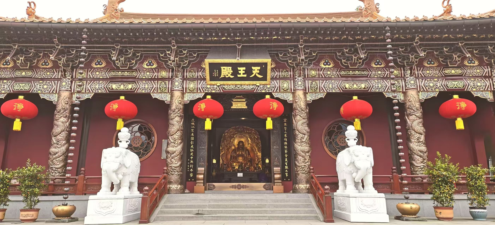
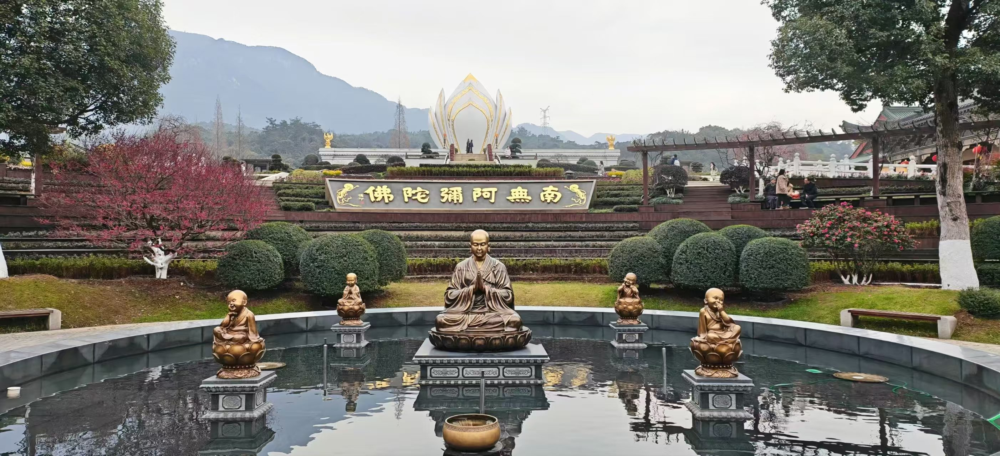
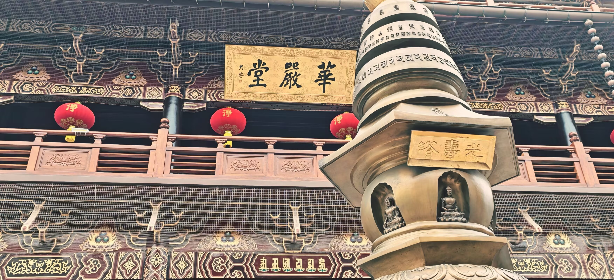

相册照片里的我
走过的地方，
留下的片刻。
军旅、毕业、工作，
还有旅行中的自己。
把不同阶段的照片放在一起，也把生活里的片刻分开读。沿着下面六个章节，看看文字之外的我。
本批 18 张照片 / 9 张首页精选 / 9 张分类留影 / 1 段军旅回忆视频
点开照片可以放大，使用左右方向键切换。
01军旅回忆
两年军旅，
留在这些片刻里。
有与战友的合影，也有日常里的留影。再用一段完整视频，回看这两年。
1 张照片在本页 · 1 段视频读我的个人经历
军旅 / 视频记录两年军旅，
两年军旅，
一段总结回忆。
把活动、训练与军旅日常的片段连在一起。这段视频，是我对两年军旅生活的一次回看。
完整视频 · 2 分 25 秒02毕业时刻
毕业，
是一个新的起点。
学士服与花束，把这一刻留了下来。读法学、入伍、退伍后回校，最终完成学业。
已收录首页精选读我的个人经历首页精选毕业留影 ↗
03工作日常
工作之间，
也有日常。
进入职场之后，在具体的事情里积累经验，也留下工作间隙的一个片刻。
已收录首页精选读我的个人经历首页精选工作间隙 ↗
04寺院与建筑
看屋顶、回廊，
也看看细节。
寺院的一组照片。从远处看整体，再走近殿前、庭院与雕刻。
3 张照片在本页首页精选寺院全景 ↗



05海边片刻
带着相机，
去看看海。
岩石旁的一张留影，沿着海边走的一张背影。两种视角，留下海边的片刻。
已收录首页精选06外出旅行
山林与梯田，
旅途里的另一种色彩。
外出游玩时体验民族服装，留下这组旅行照片。山间的风景、衣服的色彩，都属于旅途的记忆。
5 张照片在本页